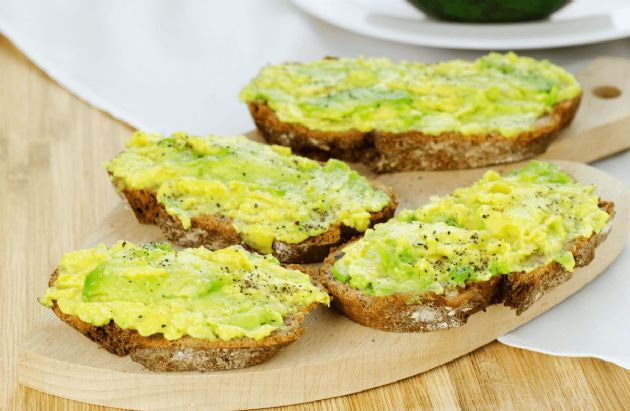

Avocado Toast *Easy*

- One 8-ounce ripe avocado, halved, pitted and peeled
- Fine salt and freshly ground black pepper
- 4 slices whole grain or whole wheat bread
- 1 clove garlic, peeled and halved
- 2 tablespoons extra-virgin olive oil or unsalted butter, softened
- Flaky sea salt, for serving
- Crushed red pepper flakes, optional
- Mash the avocado with a fork in a shallow bowl until chunky. Season with fine salt and black pepper.
- Toast the bread until browned and crisp. Lightly rub 1 side of each slice with the cut side of the garlic until fragrant; discard the garlic. Lightly brush the toasts with oil, and season with fine salt and pepper. Divide the mashed avocado evenly among the toasts, and top with more flaky sea salt, more black pepper and red pepper flakes if using.